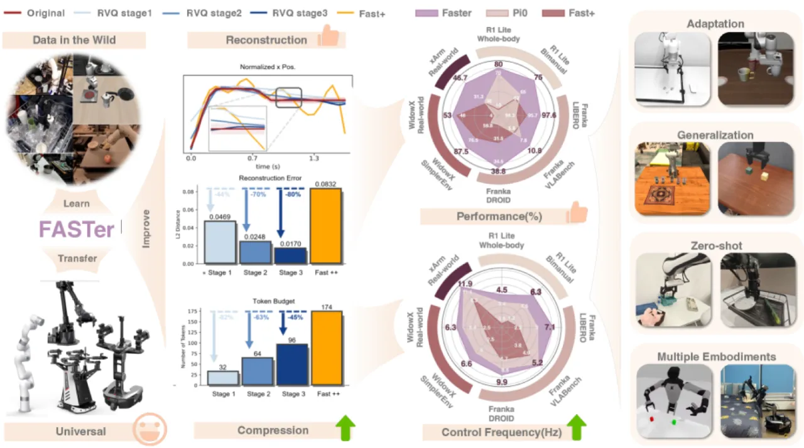
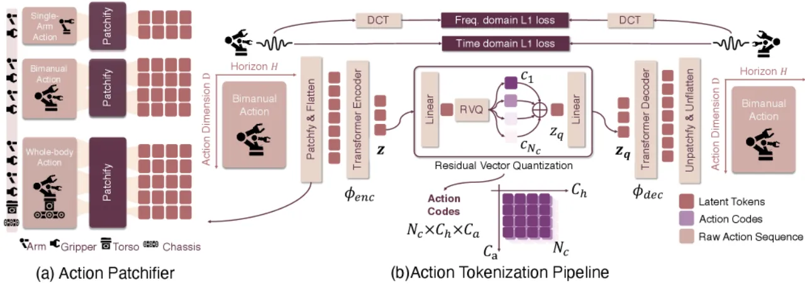
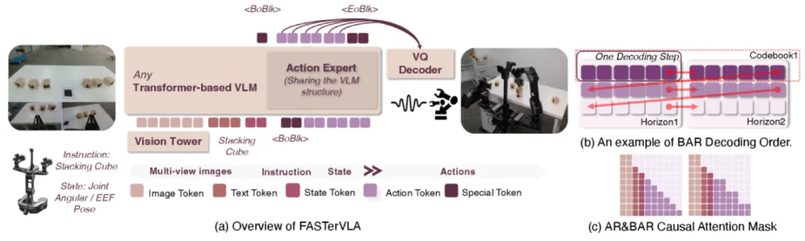
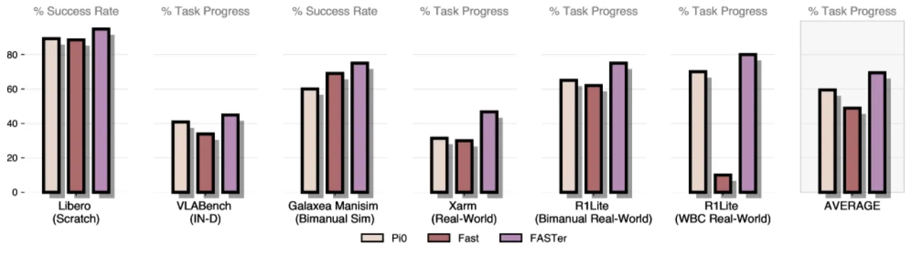
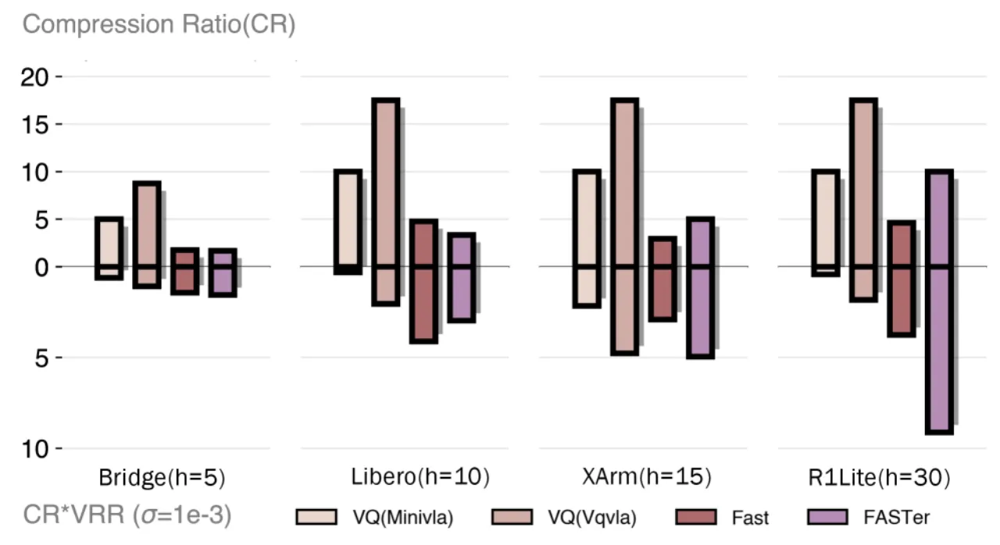

FASTer 提出了一套端到端框架，彻底解决自回归 VLA 中动作分词在重建保真度与推理效率之间的固有矛盾。 核心包含两个模块：FASTerVQ（基于 Transformer 的残差向量量化动作分词器） 和 FASTerVLA（块级自回归解码的完整 VLA 系统）， 在 LIBERO 和 Simpler-Bridge 基准上分别达到 97.9% 和 87.9% 的成功率，同时推理延迟仅为先前 FAST 方法的 20–50%。
自回归 VLA 面临一个核心矛盾：为了加快推理速度，需要将连续动作序列压缩成尽可能少的 token；但过度压缩会丢失精细的动作细节，导致任务失败。
"The key challenge lies in the reconstruction fidelity vs. inference efficiency trade-off: high compression reduces inference latency but degrades action reconstruction quality, while low compression preserves fidelity but increases token count and slows inference."
现有方法（如 FAST）将动作块经 DCT 变换后量化为离散 token，虽然加快了推理速度，但存在两大缺陷： （1）codebook 利用率低（FAST 仅使用了 48.4% 的 codebook），导致大量表征空间浪费； （2）固定的 DCT 频率截断无法自适应地保留各维度动作信号中最关键的频率成分。

FASTer 框架由两部分组成：FASTerVQ 是一个 Transformer 架构的残差向量量化（RVQ）动作分词器，负责将动作块高效编码为离散 token；FASTerVLA 则在预训练的视觉-语言骨干网络上，通过块级自回归解码（block-wise autoregressive decoding）实现快速、高精度的动作生成。

不同维度的动作（如关节角度、末端执行器位移）具有不同的频率特性与数值分布。 FASTerVQ 采用非均匀分组策略，按维度的分布特性分配不同的量化精度， 避免高方差维度与低方差维度共享同一量化网格导致的精度损失。
联合使用时域 ℓ₁ 损失（temporal ℓ₁）和 DCT 域 ℓ₁ 损失： 前者直接约束动作序列的逐步误差，后者约束频率分量以保留动作的周期性结构。 三层 RVQ codebook（大小 4096）实现了 100% 的 codebook 利用率（normalized entropy 0.91）。

标准自回归解码每步仅生成 1 个 token，对长动作序列（N 个 token）需 N 次 forward pass。 BAR 每步并行预测 B 个 token，forward pass 次数降低至 ⌈N/B⌉， 在保持 token 间因果依赖的前提下大幅提升吞吐量。
训练时对动作块中的 token 位置施加随机间距扰动，使模型学习对位置偏移鲁棒的表征， 避免在推理时因 block 边界与训练时不一致而产生位置过拟合问题。
在 LIBERO（四个子任务）、Simpler-Bridge（零样本跨具身）和 R1Lite 全身控制 上进行评测， 并与 π0、π0 FAST-D/R、OpenVLA 等最强基线对比。推理延迟在 RTX 5090 上测量。
| 模型 | Spatial | Object | Goal | Long | Average |
|---|---|---|---|---|---|
| FASTer | 98.6 | 95.4 | 98.6 | 97.9 | 97.9 |
| FASTer w/o BAR | 94.8 | 88.6 | 98.6 | 95.4 | 95.4 |
| π0 FAST-D | 96.0 | 86.8 | 96.0 | 94.2 | 94.2 |
| π0 | 95.8 | 85.2 | 98.8 | 94.2 | 94.2 |
| 模型 | Spoon | Carrot | Block | Eggplant | Average |
|---|---|---|---|---|---|
| FASTer | 91.7 | 93.3 | 67.5 | 99.2 | 87.9 |
| π0 FAST-D | 77.5 | 88.3 | 68.3 | 71.7 | 76.5 |
| π0 | 66.7 | 58.3 | 58.3 | 88.3 | 66.7 |
| OpenVLA | — | — | — | — | 29.5 |
| 任务 | FASTer | π0 FAST | π0 |
|---|---|---|---|
| 单臂操作（LIBERO） | 112 ms | 197–556 ms | 176 ms |
| 全身控制（R1Lite） | 237 ms | 1,100–3,000 ms | — |

| 指标 | FAST | FAST+ | FASTer |
|---|---|---|---|
| Codebook 大小 | 2048 | 2048 | 4096 |
| 使用率 | 48.4% | 57.4% | 100% |
| Normalized Entropy | 0.69 | 0.77 | 0.91 |

BAR 每步并行预测 B 个 token，要求动作块 token 数量在训练与推理阶段一致。 若不同任务或具身形态的动作块长度差异较大，需要重新训练或设计变长策略，限制了跨任务零样本部署的灵活性。
论文的实验以桌面操作（LIBERO、Simpler-Bridge）和全身控制（R1Lite）为主； 对移动操控、户外导航等更高自由度任务的泛化性尚未充分验证。
FASTerVQ 的 Transformer 编码器与三层 RVQ 的训练需要覆盖多具身形态的大规模动作数据集； 相比 DCT+简单量化的 FAST，其训练成本更高，部署新具身形态时需要重新收集数据并微调分词器。
尽管 FASTer 在 RTX 5090 上达到 112 ms（单臂）和 237 ms（全身）， 对于需要 30 Hz 以上控制频率（<33 ms）的高动态任务（如高速抛接、敏捷运动）， 当前延迟仍存在差距，需要进一步量化或推理优化。